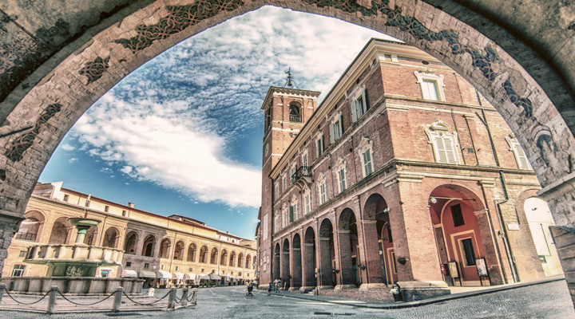

Fabriano è la città che non ti aspetti, che va visitata a piedi, tra le viuzze del centro, perché si scopre camminando, complice le distanze che si accorciano, che ti permettono di passare da una piazza all’altra in 5 minuti.
Oggi vi raccontiamo 10 cose da fare e vedere in quella che è conosciuta almeno in tutta Europa come la Città della Carta, ma che in realtà è la città dell’industria, del Rinascimento, la Città Creativa dell’Unesco, immersa nel verde del Parco e delle montagne che la circondano, dove si mangia bene, dove puoi trovare un museo che non ti aspetti, dai mestieri in bicicletta al pianoforte, passando dalle “Terre del Gentile” alle opere di Salvador Dalì, fino alla magia, ad appena dieci minuti di macchina, delle vicine Grotte di Frasassi. E allora, questa volta, sarà proprio un fabrianese – che scrive – a raccontarvela!